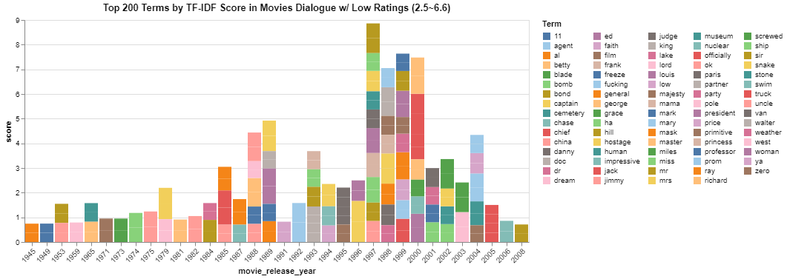
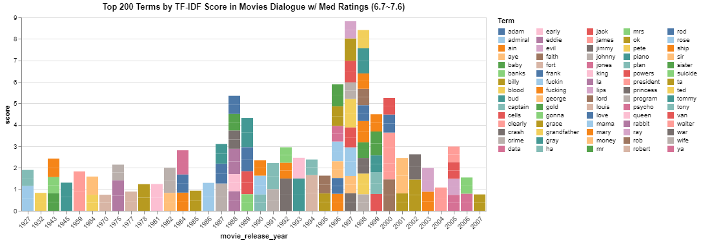
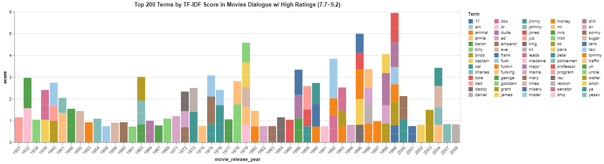
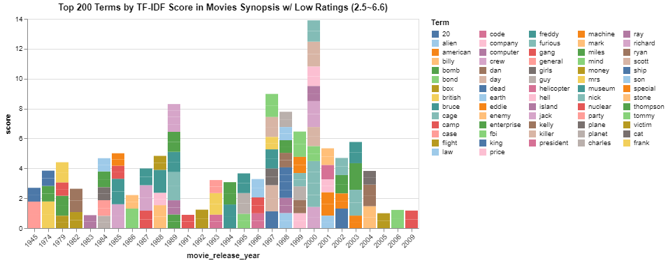
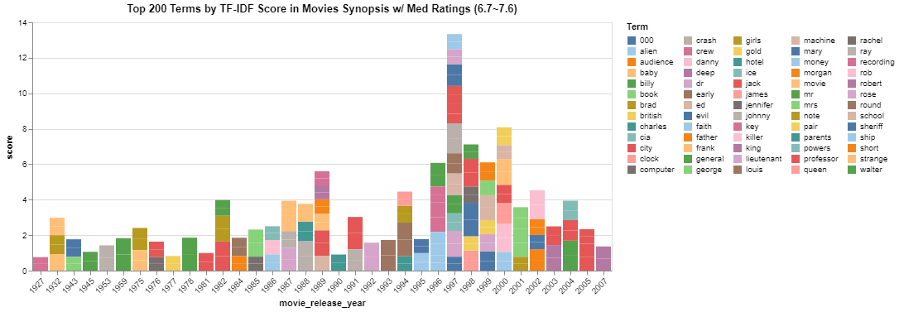
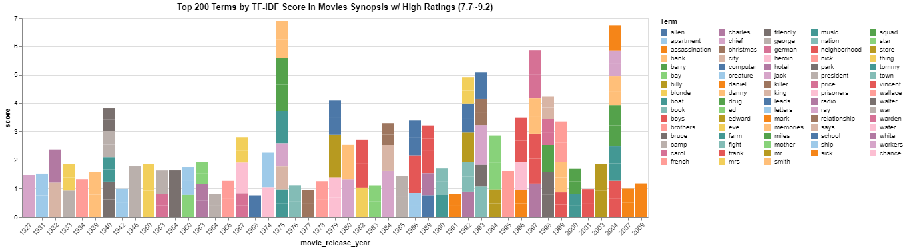

Dialogues Data:
With TfidfVectorizer(max_df=.8, min_df=0.05, stop_words='english', lowercase=True), we gain the most frequent unique words in the conversation data from these movies across different ratings and visualize the first 200 words.

For these low rating (2.5~6.6) movies, there seems to be a frequent appearance for movie conversations involving 'agent', 'bomb', 'chase', and 'president', 'princess', and 'museum', depicting an action movie on thriller and adventure.

For these medium raing (6.7~7.6) movies, there seems to be more appearances for movies conversations involving 'captain', 'emperor', 'king', and 'leads', 'professor', and 'policeman', pointing more to the power dynamic in people's conversations and some storis of musical and history.

For these high raing (7.7~9.2) movies, there seems to be a lot of overlapping with the medium rating movies with some new terms such as 'senator', 'tank', and 'taxi', which coincide with our later Cosine Similarity Analysis where highly rated and medium rated movies share a higher similiarity with terms with a TF-IDF score of > 0.5 (0.022308149910767405) than the other two groups (0.019886363636363636, 0.018229166666666668).
Synopsis:

For these low rating (2.5~6.6) movies, there seems to be a frequent appearance for movies involving 'bond', 'emterprise', 'nuclear', and 'fbi', 'killer', depicting an action movie on thriller and adventure and consistent with our conlusin above.

For these medium rating (6.7~7.6) movies, there seems to be more appearances for movies involving 'computer', 'money', 'evil', and 'professor', 'cia', 'lieutenant', emphasizing more on horror and suspense movie genres.

For these high raing (7.7~9.2) movies, there seems to be more appearances for movies involving 'creature', 'chance', 'alien', 'memories', and 'workers', 'prisoners'. Meanwhile in terms of movie genres, documentary in medium ratings movies was replaced by film-noir in high ratings, indicating a topic preferences in these concepts and the film-noir genre. However, film-noir actually also appears in the low ratings genre, this could show that film-noir has a really polarized views among audiences.